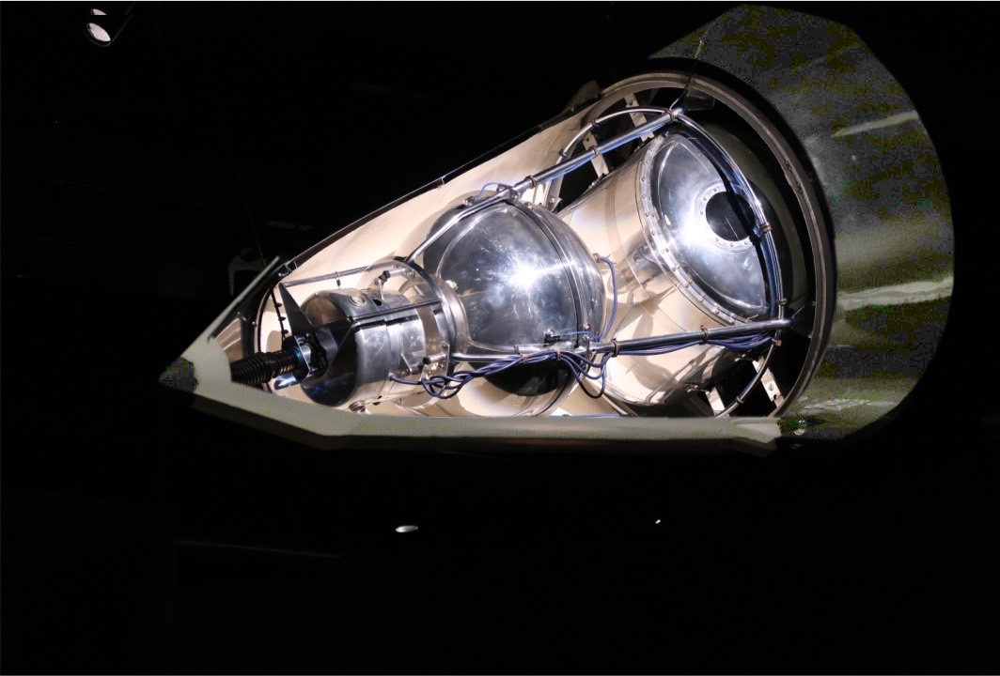
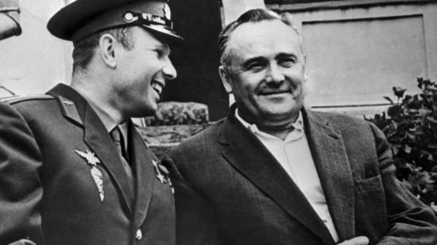
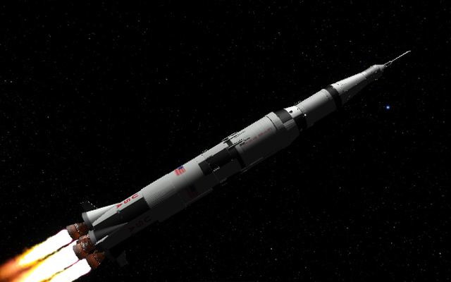

SPACE RACE
Timeline
Sputnik 1: October 4, 1957
The Soviet Union’s first spacecraft launch changed the world overnight. Sputnik was the first artificial satellite to enter the atmosphere and passed over the United States multiple times daily. The world had never seen this technology, and the possibilities and dangers were endless, sparking fear across the globe. Sputnik is largely considered to be the “starting point” of the Space Race because of its effect on both countries’ national agendas.
Soviet
Sputnik 2: November 3, 1957
Laika, the dog from the USSR, made history by becoming the first live organism launched into space. The Soviets launched Sputnik II less than a month after its predecessor to learn about the effects of space on animals and the conditions under which they could survive. Unfortunately, Laika’s trip was designed to be one way. She died shortly after takeoff due to the stress of the launch.
Soviet
Explorer 1: January 31, 1958
The United States’ response to Sputnik 1 was only 80.75-inches long, but the entire setup (a Jupiter-C rocket used to send the diminutive satellite into orbit) stood 71.25-feet tall on the launchpad. Explorer 1’s launch made international headlines but fell flat in comparison to the Soviet Union’s two satellites that were already in orbit.

USA
Opening of NASA: July 29, 1958
The United States’ response to Sputnik 1 was only 80.75-inches long, but the entire setup (a Jupiter-C rocket used to send the diminutive satellite into orbit) stood 71.25-feet tall on the launchpad. Explorer 1’s launch made international headlines but fell flat in comparison to the Soviet Union’s two satellites that were already in orbit.
USA
Luna 1: January 2, 1959
The Soviet Union sent a spacecraft over the surface of the moon. It flew approximately 5,000 kilometers overhead two days after launch.
Soveit
Vostok 1: April 12, 1961
Yuri Gagarin simultaneously becomes the first person in space and the first person to orbit the Earth. His one hour and forty-eight-minute flight astounded millions, but his safe return was the biggest triumph. This was monumental for the Soviet’s space program, and a crushing blow for NASA scientists.
Soveit
Mercury Redstone 3: May 5, 1961
Alan Shepard becomes the first American in space, completing a suborbital flight in just over 15 minutes.
USA
Kennedy promises a man on the moon by 1970: May 25, 1961
Before a special joint session of Congress, President John Kennedy quells fears of a Soviet victory in space by promising to have an American astronaut on the moon by the end of the decade.
USA
Vostok 2: August 6, 1961
Gherman Titov, the backup pilot for Vostok 1, got his turn in space when he became the second man to orbit the Earth. He spent just over a day in space, becoming a test subject for the effect of space on humans.
Soveit
Mercury Atlas 6: February 20, 1962
John Glenn becomes the first American to orbit the Earth. While this was a sigh of relief for NASA scientists, they were still severely behind the Soviets technologically.
USA
Sergey Korolyov dies of a heart attack: January 16, 1966
Korolyov, a Soviet rocket engineer, was largely responsible for the success of the Sputnik and Vostok programs. Without his guidance, the Soviet engineers must navigate a lunar landing on their own.
Soveit
Luna 12: October 22, 1966
This Soviet probe returned the first images of the far side of the moon. It entered lunar orbit three days after launch.
Soveit
Apollo 1: January 27, 1967
Tragedy struck when a fire swept through the command module of the Apollo 1 spacecraft. Millions of people around the globe witnessed the deaths of Gus Grissom, Edward White, and Roger Chaffee on television. It was a real blow to those rooting for the United States to win the space race.
USA
Apollo 8: December 21, 1968
This was the first successful crewed mission to orbit the moon, turning the tide of the Space Race. These astronauts took photos that were immensely helpful to the Apollo 11 landing preparation.
USA
Apollo 11: July 16, 1969-July 20, 1969
Neil Armstrong, Buzz Aldrin, and Michael Collins fulfilled the promise Kennedy made, nearly ten years prior, of a lunar landing. They touched down on the moon’s surface four days after the launch.
USA